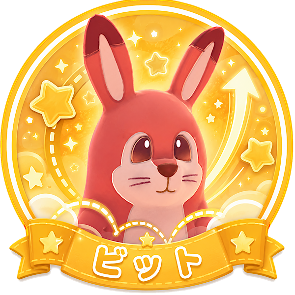

「障害物を飛び越えるアクティブ」タイプ
あなたは、止まって考えるよりも、自分から動いて道を切り開くタイプ。
障害物や混雑があっても、「別のルートで行けるかも」と前向きに動けます。
狭い場所や忙しい場面でも、テンポよく作業を進めたい気持ちが強い人です。
少しクセのある移動でも、慣れて使いこなすことに楽しさを感じます。
ビットはジャンプで障害物や段差を越えられるキャラです。
キッチン周りの障害物や床の汚れを越えながら動けるため、混雑した場面で強みを出しやすいです。
台の上を使った動きなど、工夫次第で独特の立ち回りもできます。
アクティブに動き回りたいあなたと相性の良いキャラです。